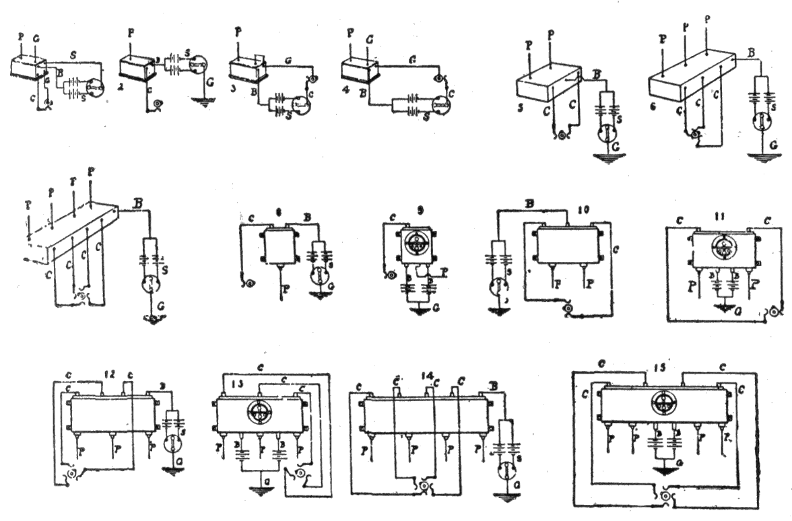

Fig.
147 to 161.—Wiring diagrams showing connections of
some standard spark coils. Key: B, to battery; C, to commutator or timer;
G, to ground (engine frame); P, to plugs; S, to switch. 1, 6 terminal
standard non-vibrator coil; 2, 3 terminal standard vibrator coil; 3 and 4,
terminal standard vibrator coil; 5, standard double vibrator coil; 6,
standard triple vibrator coil; 7, standard quadruple vibrator coil; 8,
single dash coil; 9, single dash coil with switch; 10, double dash coil;
11, double dash coil with switch; 12, triple dash coil; 13, triple dash
coil with switch; 14, quadruple dash coil; 15, sextuple dash coil.